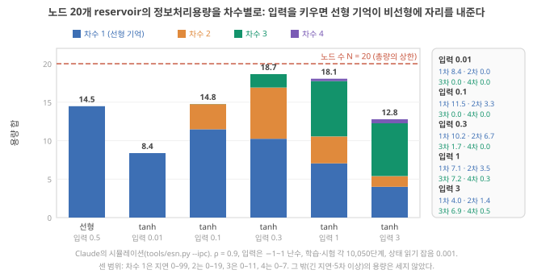
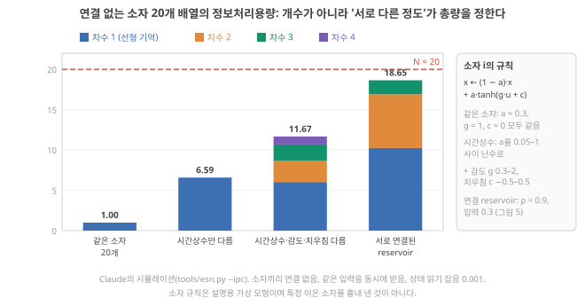
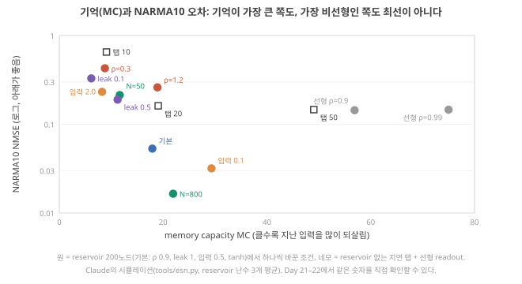

Day 20. 기억–비선형 상충과 ‘서로 다른’ 노드
Phase 2 · RC는 왜, 어떻게 작동하는가
이번 질문 기억과 비선형은 왜 맞바꿔야 하고, 이온 device 배열에서 '서로 다른' 노드는 왜 중요한가?
왜 배우나 retention·정류비를 올린 논문이 같은 device N개가 다른 상태를 주는지 확인할 측정을 고른다.
오늘의 장면 knob 변경(입력 크기·ρ·leak) → 총량이 상한 → capacity가 기억↔︎비선형 이동 → 과제 오차 최소 배분
오늘 반드시 총량이 상한이면 기억과 비선형은 capacity를 나눠 갖는다. 같은 device N개는 하나로 세어지고 시간상수·감도가 달라야 독립 상태가 는다.
나중에 봐도 됨 시뮬레이션 숫자 · Singh 2026 참여비 식 · 오늘의 반론
이후 쓰이는 곳 Day 21–22 조건 바꾸기 · Day 33–34 device 편차 · Day 39–42 시간상수 설계
지난 학습 복습
지난 학습 단위(Day 19 · information processing capacity와 노드 수 한계)의 핵심을 다른 예로 확인합니다. 고르는 즉시 맞았는지와 이유가 보입니다. 틀려도 아래 학습자료는 그대로 열려 있고, 틀린 문제에는 다시 볼 곳이 붙습니다.
학습자료
4. Memory–nonlinearity 상충: 시뮬레이션으로 보기
상황. 입력 전압의 크기를 키우면 device가 포화 구간을 더 많이 써서 응답이 더 휘고(비선형 증가), 그러면 기억은 어떻게 될까요? 이 구간은 같은 reservoir에서 입력 크기만 바꿔 기억 용량과 비선형 용량이 어떻게 달라지는지 시뮬레이션으로 봅니다.
왜 지금? 상한이 있다면 기억과 비선형은 그 안에서 자리를 나눠 가질 수밖에 없습니다. 입력 크기를 바꿔 이를 시뮬레이션으로 봅니다.
어디에 쓰이나? 내 device의 입력 전압 크기, \(\rho\), leak 선택이 기억과 비선형 중 어느 쪽을 키울지 예측할 때 씁니다.
끝나면 할 수 있는 것. 노드 20개 reservoir의 차수별 용량이 입력 크기에 따라 어떻게 바뀌는지(선형 기억 11.5 → 4.0, 3차 0.02 → 6.9) 막대 그림에서 읽고, 총량이 상한 \(N\)에 닿았을 때 기억과 비선형이 자리를 나눠 갖는다는 상충과, 상한 아래에서는 둘이 함께 늘 수도 있다는 것을 구별해 설명할 수 있다.
Memory–nonlinearity 상충
무엇인가. 그림자 절에 따르면 선형 readout이 꺼낼 수 있는 총량은 노드 수 \(N\)을 넘지 못합니다(상한). 그 총량을 차수 1(선형 기억)과 차수 2 이상(비선형)이 나눠 갖습니다. 총량이 이미 상한 \(N\)에 닿아 있을 때는(그림자 절의 등호 조건: fading memory, 목표 함수 전부를 셈, 잡음 없음) 비선형 쪽 몫이 늘면 선형 기억 쪽 몫이 그만큼 줄어야 합니다. 이것이 memory–nonlinearity 상충(trade-off)입니다. 반대로 총량이 상한보다 한참 아래면(예: 잡음에 묻혀 8만 읽히던 것이 12로 느는 경우) 두 몫이 함께 늘 수도 있습니다. 그래서 실제 측정에서는 "\(N\)이 같으니 하나를 늘리면 다른 하나는 반드시 준다"가 아니라, 총량이 얼마나 채워졌는지부터 봐야 합니다.
가장 작은 예. IPC 절의 네 단계 예가 이 상충의 가장 작은 모습입니다. 노드 하나의 용량 1을 선형 노드 A는 모두 기억 항(차수 1)에 썼고, \(\tanh\) 노드 B는 0.86을 기억 항에, 0.14를 곱 항(차수 2)에 썼습니다. 이 노드는 잡음이 없고 목표 함수를 빠짐없이 센 경우라 몫의 합이 상한 1에 딱 닿아 있습니다. 그래서 곱 항에 준 0.14만큼 기억 항이 덜 받았습니다(상한에 닿아 있을 때의 재배분).
왜 그렇게 되나(직관). 해석 노드가 \(\tanh\)의 휘는 구간에서 움직이면, 지난 입력의 흔적이 깨끗한 "복사본"으로 남지 않고 일부가 그 입력의 제곱·세제곱, 다른 입력과의 곱으로 바뀌어 남습니다. 비선형을 얻은 대가로 깨끗한 기억이 줄어든 것입니다. 또 입력이 커서 노드가 포화 쪽으로 밀리면 새 입력이 상태를 거의 덮어써서 옛 흔적이 빨리 지워집니다.
논문의 근거. ★ Liang은 이전 연구에서 선형 노드를 쓴 RC가 비선형 노드를 쓴 RC보다 보통 훨씬 높은 MC를 보이며, 이는 과거 정보가 비선형성에 의해 왜곡되기 때문이라고 씁니다. Liang 2024, p.200 Liang이 인용한 Inubushi & Yoshimura 2017(Sci. Rep. 7, 10199, "Reservoir computing beyond memory-nonlinearity trade-off", doi:10.1038/s41598-017-10257-6)의 초록은 이 상충을 Dambre 등 2012가 밝힌 것으로 소개하고, 그 동역학적 원인을 분석한 뒤 선형 동역학과 비선형 동역학을 섞은 reservoir로 성능을 높일 수 있다고 씁니다. 미확인 공개 초록만 확인
조절 knob. 같은 reservoir에서 비선형의 세기를 바꾸는 가장 쉬운 knob이 입력 크기입니다. 입력이 작으면 노드가 \(\tanh\)의 거의 직선인 가운데 구간에서 움직이고(선형에 가까움), 크면 휘는·포화 구간까지 갑니다. Day 17–18에서 입력 0.05가 XOR을 잘 못 푼 것이 이 이유였습니다.
시뮬레이션. 노드 20개 reservoir(spectral radius ρ = 0.9, 고유벡터·고윳값·spectral radius)에 −1~1 난수 입력을 넣고, 입력 크기(입력에 곱하는 배율)만 0.01 → 0.1 → 0.3 → 1 → 3으로 바꾸며 차수 1–4의 용량을 쟀습니다. 상태(−1~1 사이 값)를 읽을 때마다 표준편차 0.001의 작은 측정 잡음을 더했습니다. 비교를 위해 선형 reservoir도 넣었습니다. 측정이 아니라 Claude가 돌린 시뮬레이션입니다. tools/esn.py --ipc로 계산
무엇을 볼지. 그림 6의 막대 하나가 설정 하나입니다(맨 왼쪽은 선형 reservoir, 나머지는 \(\tanh\) reservoir에서 입력 배율만 바꾼 것). 막대 높이는 용량의 합이고, 색은 그 합을 차수별로 나눈 몫입니다(파랑 = 차수 1 기억, 주황 = 2차, 초록 = 3차, 보라 = 4차). 빨간 점선은 노드 수 20입니다. 입력 0.1 막대부터 오른쪽으로 갈 때 파랑이 줄고 초록(3차)이 느는지, 그리고 어느 막대도 빨간 선을 넘지 않는지 보세요.

막대 그림이 말하는 것. 해석
- 함께 느는 구간: 입력 0.01 → 0.1에서는 차수 1이 8.4 → 11.5, 합이 8.4 → 14.8로 둘 다 늘었습니다. 총량이 상한 20보다 한참 아래였고(잡음에 묻힌 몫), 입력이 커지면서 읽히는 신호가 늘었기 때문입니다. 상충은 "언제나"가 아니라 총량이 차오른 뒤의 이야기입니다.
- 상충: 입력 0.1 → 0.3 → 1 → 3에서 차수 1(선형 기억)이 11.5 → 10.2 → 7.1 → 4.0으로 줄고, 차수 3이 0.02 → 1.7 → 7.2 → 6.9로 늡니다. ★ 같은 노드 20개가 기억과 비선형에 나눠 주는 비율이 바뀐 것입니다. 다만 이 구간의 합(14.8, 18.7, 18.1, 12.8)은 20에 닿지 않았으므로, 기억이 준 것을 상한만으로 설명할 수는 없고 위 '직관'의 왜곡·덮어쓰기가 함께 작용했다고 봅니다. 또 이 합은 유한한 데이터·측정 잡음·정해 둔 목표(차수 1–4, 정한 지연 창)로 잰 값이라, 원 논문의 상한·등호 조건이 말하는 총량과 같은 것이 아닙니다.
- 상한: 가장 큰 합은 입력 0.3의 18.7로, 노드 수 20에 가깝지만 넘지 않습니다.
- 너무 작은 입력: 입력 0.01은 거의 선형이라 비선형 몫이 0이고, 신호 자체가 작아 측정 잡음(0.001)에 오래된 흔적이 묻혀 차수 1도 8.4뿐입니다. "약한 입력 = 깨끗한 기억"이 아닙니다.
- 선형 reservoir: 차수 1만 14.5이고 비선형은 0입니다. 같은 잡음에서 tanh의 어떤 설정보다 선형 기억이 큽니다(Liang의 문장과 같은 방향). 그러나 20에 못 미치는 것은 오래된 입력의 작은 흔적이 잡음에 묻혔기 때문입니다.
노드 200개에서도. Day 21–22의 시뮬레이션(노드 200개, 측정 잡음 없음)에서 MC는 선형 reservoir 56.9, tanh 입력 0.1에서 29.3, 기본(입력 0.5)에서 17.9, 입력 2.0에서 8.2로, 입력을 키울수록 줄었습니다(Claude의 시뮬레이션). 같은 상충입니다.
선형 reservoir는 MC가 56.9로 tanh(17.9)의 세 배입니다. 그렇다면 NARMA10(10단계 기억 + 2차 곱)도 선형 reservoir가 더 잘할까요? 아래 점검의 둘째 문제입니다.
- 상한 \(N\) 안에서 차수 1(기억)과 차수 ≥ 2(비선형)가 용량을 나눠 갖는다. 총량이 상한에 닿아 있을 때(fading memory, 목표 전부, 잡음 없음)만 비선형 몫이 늘면 기억 몫이 그만큼 준다. 상한 아래에서는 둘이 함께 늘 수 있다(입력 0.01 → 0.1). 선형 노드가 대개 MC가 훨씬 높다 Liang 2024, p.200.
- 노드 20개: 입력 0.1 → 3에서 차수 1이 11.5 → 4.0, 차수 3이 0.02 → 6.9. 합은 최대 18.7로 20을 넘지 않는다(Claude의 시뮬레이션).
- 입력이 너무 작으면 잡음에 묻혀 합 자체가 작다(8.4). 노드 200개에서도 MC 56.9(선형) → 8.2(입력 2.0). 모두 Claude의 시뮬레이션.
5. 노드 수가 아니라 '서로 다른' 노드 수: 이온 device 배열의 경우
상황. 같은 device 20개를 배열하면 용량도 20배가 될까요? Device 사이 차이가 용량에 어떻게 들어가는지 봅니다.
왜 지금? 총량 상한이 "독립 상태 수"이므로, device 배열에서는 그 수가 개수가 아니라 device들이 얼마나 서로 다른가로 정해집니다.
어디에 쓰이나? 내 device를 여러 개 만들 때 어떤 변수(두께, 조성, 이온 농도)를 일부러 다르게 할지 정하는 데 씁니다.
끝나면 할 수 있는 것. 서로 연결되지 않은 device 20개 배열의 IPC가 "모두 같은 device"면 1.0, "시간상수만 다르면" 6.6, "시간상수·감도·치우침이 다르면" 11.7이라는 시뮬레이션을 읽고, device 배열의 용량을 정하는 것이 개수가 아니라 서로 다른 정도라는 것을 이온 device 설계의 질문으로 옮길 수 있다.
이온 device 연구에서 가장 흔한 reservoir 구성은 device 여러 개를 서로 연결하지 않고 같은 입력(또는 마스크를 거친 입력, Day 17–18의 마스크)에 나란히 놓고 각각의 전류를 읽는 것입니다. Liang은 이것을 dynamic devices RC라 부릅니다. Liang 2024, p.195 그림자 그림을 이 구성에 대 봅니다. Device 20개 = 노드 20개이니 상한은 20입니다. 실제로는 얼마일까요?
무엇을 볼지. 그림 7의 막대 넷은 모두 device(노드) 20개입니다. 왼쪽 셋은 서로 연결 없이 같은 입력을 받는 device 배열이고, device끼리 무엇이 다른지만 바꿨습니다. 맨 오른쪽은 비교용 연결 reservoir입니다. 색(파랑 = 차수 1 기억, 주황 = 2차, 초록 = 3차, 보라 = 4차)과 빨간 점선(노드 수 20)의 뜻은 앞 막대 그림과 같습니다. Device 수는 같은데 막대 높이가 얼마나 다른지 보세요.

배열 막대가 말하는 것. 해석
- 같은 device는 몇 개를 놓아도 하나다. 같은 규칙, 같은 입력이면 20개의 전류가 똑같이 움직입니다. 판의 차원은 1이고(그림자 절의 이유 1), 용량 합은 1.00입니다. Device 20개를 만드는 비용을 치르고 device 하나의 계산을 얻은 셈입니다.
- 시간상수가 다르면 기억이 늘어난다. 잊는 속도(\(a\))를 0.05–1 사이로 다르게 하면, 빠른 device는 최근을, 느린 device는 먼 과거를 맡아 Day 15–16의 "memory budget"이 device들 사이에 나뉘어 쌓입니다(6.59). 다만 이 device들은 대칭(\(c = 0\))이고 입력이 적당해 비선형 몫은 거의 0입니다.
- 감도와 치우침까지 다르면 비선형이 생긴다. device마다 휘는 구간이 달라지고 대칭이 깨져 2–4차 몫이 생깁니다(11.67). Day 17–18의 "치우침 없는 tanh는 XOR을 못 한다"와 같은 이야기입니다.
- 연결이 있으면 더 쓴다. 같은 20개라도 서로 연결된 reservoir는 18.65로 상한에 가깝습니다. 연결이 노드들을 서로 다른 함수로 만들기 때문입니다. 단, 이온 device끼리 연결하는 것은 device를 나란히 놓는 것보다 훨씬 어렵습니다(Day 49–50).
원문은 같은 방향을 말한다. ★ Liang은 dynamic devices RC의 과제로, 내부 상태가 긴 시간척도의 정보를 담고 구별하기 어렵다는 점을 들며 "MC가 device 하나의 용량에만 의존하고, 병렬 device 여러 개의 MC는 누적되지 않고 대부분 겹친다"고 씁니다. Liang 2024, p.196 같은 쪽에서 상태의 풍부함은 device 간 시간 동역학의 편차로 어느 정도 높일 수 있고, 편차가 작은 device 무리는 readout의 과적합 같은 문제를 일으킬 수 있으며, 게이트 길이를 다르게 한 이온 트랜지스터로 이완 시간과 비선형성을 다르게 해 풍부함을 높인 사례를 소개합니다. Liang 2024, p.196 배열 막대의 '시간상수만 다름'과 '다 다름'이 그 방향입니다.
★ Singh 2026은 물리 전극·샘플링 지점·virtual node의 수는 독립적인 계산 상태의 수와 같지 않다며, 측정한 상태들의 공분산(두 상태가 함께 변하는 정도를 모든 쌍에 대해 적은 표)의 고윳값(고유벡터·고윳값·spectral radius의 '특별한 방향의 배율') 분포에서 참여비 차원 \(D_{PR}\)(상태들의 흔들림이 몇 개의 독립 방향에 고르게 퍼져 있는지를 나타내는 수. 20개 방향에 고르게 퍼지면 20, 한 방향에 몰리면 1)을 구하고 채널을 하나씩 늘리며 과제 성능을 보라고 권합니다. Singh 2026, p.13 그리고 독립적인 관측량이 많을수록 분리가 좋아지지만 중복된 채널은 배선·데이터·보정 부담과 과적합 위험만 늘린다고 씁니다. Singh 2026, p.6
실제 하드웨어에서는. Zhong 2022는 같은 공정으로 만든 device 24개를 나란히 놓은 reservoir를 하드웨어로 만들었습니다. 아래 그림의 왼쪽이 그 24개의 전류–전압 곡선입니다. 읽는 법: 먼저 왼쪽 그래프에서 색이 다른 곡선 24개가 얼마나 겹치는지 보고, 그다음 가운데 실물 사진(device 칩과 회로 기판)을 봅니다. 곡선이 거의 겹친다는 것은 그대로 쓰면 배열 막대의 '같은 device 20개'(용량 1.00)에 가깝다는 뜻이고, 그래서 저자들은 device마다 다른 마스크(입력에 곱하는 서로 다른 ±1 순서, Input mask)를 줘서 노드를 서로 다르게 만들었습니다. 해석

이온 device 설계의 질문으로 옮기면. 가설 이온 device의 "시간상수"는 이온의 이동 거리와 확산(Day 39–40), 고분자 사슬 운동(Day 41–42)으로 정해지고, "감도·치우침"은 계면 전하, 정류 구조, 조성으로 정해질 것입니다. 그렇다면 같은 공정으로 만든 device들을 일부러 서로 다르게(두께, 조성, 전극 간격, 게이트 길이) 만드는 것이 용량을 늘리는 설계 변수가 될 수 있습니다. 반대로 "device 간 편차가 작다"는, 메모리 device에서는 장점이지만 reservoir 배열에서는 용량을 깎는 요인일 수 있습니다. 단, 통제된 차이여야 합니다. 같은 device가 날마다 다르게 응답하는 편차(재현성 문제, Day 33–34)는 용량이 아니라 잡음입니다. 해석
내 device를 10개 만들어 나란히 놓는다고 해 봅시다. 그 10개가 서로 "다른 함수"가 되게 하려면 무엇을 일부러 다르게 만들 수 있나요(두께? 고분자 조성? 이온 농도? 전극 거리?)? 그리고 그 차이가 매번 같은 차이로 재현되려면 무엇을 관리해야 하나요? 두 줄로 적어 보세요.
생각 정리 보기
두 줄 답의 예 가설:
- 다르게 만들 것. 고분자 필름 두께를 10개 device에서 50–500 nm로 나눠 이온이 움직일 거리를 바꾸면 \(\tau\)가 device마다 달라집니다(배열 막대의 '시간상수만 다름', 1.00 → 6.59 쪽). 여기에 전극 간격이나 정류 구조를 달리해 휘는 정도·치우침까지 다르게 하면 '다 다름'(11.67) 쪽으로 갑니다. 이온 농도는 \(\tau\)와 응답 크기를 함께 움직일 것으로 예상합니다.
- 관리할 것. 두께(엘립소미터 등으로 device마다 실측), 습도·온도(이온 이동도가 크게 바뀜), 측정 전 쉬는 시간(이전 펄스의 흔적 지우기)을 고정합니다.
판정은 숫자로 합니다. 예: 같은 펄스 열을 다섯 번 넣었을 때 한 device의 \(\tau\)가 ±5% 흔들리는데 device 사이 \(\tau\) 차이가 2–10배라면, 그 차이는 "다른 함수"입니다. Device 사이 차이가 ±5% 안에 묻히면 "같은 device의 잡음"일 뿐입니다.
- 연결 없는 device 20개: 같은 device 1.00, 시간상수만 다름 6.59, 시간상수·감도·치우침 다름 11.67, 연결된 reservoir 18.65(Claude의 시뮬레이션).
- 병렬 device의 MC는 누적되지 않고 대부분 겹친다; device 간 동역학 편차·다른 게이트 길이가 풍부함을 높인다 Liang 2024, p.196.
- 채널 수 ≠ 독립 상태 수. 참여비 차원과 채널을 늘리며 본 성능으로 확인한다 Singh 2026, p.6, 13.
- 이온 device 배열의 설계 변수 후보: 통제된 차이(시간상수·감도·대칭) 가설. 통제 안 된 편차는 잡음이다.
6. 그래서 좋은 reservoir란: 과제에 맞춘 배분
상황. MC가 가장 큰 설정이 과제 오차도 가장 작을 것 같지만, 시뮬레이션에서는 그렇지 않았습니다.
왜 지금? 총량이 정해져 있다면 좋은 reservoir는 "많은" 것이 아니라 "과제에 맞게 나눈" 것이어야 합니다.
어디에 쓰이나? device 개선 논문의 "MC가 높아졌다" 같은 주장이 과제 성능으로 이어지는지 판단할 때 씁니다.
끝나면 할 수 있는 것. 막대 그림에서 "MC가 가장 큰 설정(선형, 56.9)"도 "가장 비선형인 설정(입력 2.0)"도 NARMA10에서 최선이 아니었다는 것을 읽고, '좋은 reservoir'를 "과제가 요구하는 차수와 지연에 용량을 배분하는 reservoir"로 다시 정의할 수 있다.
Day 21–22에서 직접 돌릴 결과를 미리 한 그림에 놓습니다. 가로축은 MC(지난 입력을 얼마나 되살리나), 세로축은 NARMA10의 오차(NMSE, 0이면 완벽, 아래로 갈수록 좋음)입니다. 세로축은 로그 눈금이라 0.01, 0.1, 1이 같은 간격으로 놓입니다(한 칸 = 10배, 로그 축).

산점도가 말하는 것. 해석
- 기억이 최대인 쪽이 최선이 아니다. 선형 reservoir(MC 56.9, 75.0)와 delay tap 50개(MC 49.0)는 기억이 넉넉하지만 2차 곱을 못 만들어 오차 0.14대에서 멈춥니다(Day 17–18의 선형 reservoir).
- 비선형이 강한 쪽도 최선이 아니다. 입력 2.0은 비선형이 강하지만 MC 8.2로 기억이 10단계에 못 미쳐 0.232입니다. 짧은 기억(ρ 0.3, leak 0.1)도 마찬가지입니다.
- 둘을 함께 준 쪽이 낫다. 기본 설정(MC 17.9, 0.053)보다 입력을 0.1로 줄인 설정(MC 29.3, 0.032)이 나았습니다. NARMA10의 비선형은 2차라 약한 비선형으로 충분하고, 남는 용량을 기억에 쓴 것이 이득이었다고 해석할 수 있습니다. 노드를 800개로 늘리면(총량 자체를 키우면) 0.0165로 가장 좋습니다.
"좋은 reservoir"의 정의를 바꾼다. 오늘의 결론은 이렇게 쓸 수 있습니다. reservoir의 질은 기억의 길이나 비선형의 세기 하나로 정해지지 않는다. 노드 수로 묶인 총량을, 과제가 요구하는 차수와 지연에 얼마나 배분하느냐로 정해진다. 해석 그래서 "retention을 두 배로 늘렸다", "정류비(한 방향과 반대 방향 전류의 비, 선형과 비선형)를 열 배로 키웠다"는 device 개선은 그 자체만으로는 reservoir 개선이라고 말할 수 없습니다. 그 개선이 과제가 요구하는 쪽으로 용량을 옮겼는지, 아니면 이미 넘치는 쪽에 더 얹었는지를 차수별 용량이나 과제 성능으로 확인해야 합니다.
Singh 2026은 같은 취지로, 시계열 예측과 계 식별에서는 지연별 기억 분포, 필요한 차수의 비선형 information processing capacity, 예측 구간 동안의 상태 안정성에 무게를 두라고 하고, 이 지표들은 서로 바꿔 쓸 수 없는 보완적 기술이라고 씁니다. Singh 2026, p.8 기억도 합계 하나가 아니라 지연별 분포 전체(\(MC_k\) 대 \(k\))를 보고하라고 하는데, 합계가 비슷해도 기억이 닿는 시간 범위가 크게 다를 수 있기 때문입니다. Singh 2026, p.13
NARMA라는 과제 자체에 대한 주의. Stepney는 NARMA가 아마 RC 문헌에서 가장 흔한 벤치마크이지만, 가끔 값이 발산하고 문헌마다 매개변수가 제각각이며 \(N\)에 따른 결론을 내리기 어려워 조심해서 써야 하고, 비선형 기억 과제의 성격을 가지므로 더 해석하기 쉬운 IPC가 이런 한계를 넘는다고 씁니다. Stepney 2024, p.677 또 NARMA가 2차 비선형 기억 용량과 비슷해 보이지만 정확히 무엇을 재는지, 이론적 한계가 무엇인지 불분명하다고 덧붙입니다. Stepney 2024, p.680 그러니 Day 21–22에서 NARMA10 숫자 하나만 보고 "이 reservoir가 좋다"고 결론 내리지 말고, MC와 함께 보아야 합니다.
- NARMA10: 선형(MC 56.9) 0.144, 입력 2.0(MC 8.2) 0.232, 기본(17.9) 0.053, 입력 0.1(29.3) 0.032, N = 800 0.0165(Claude의 시뮬레이션). 최대 기억도 최대 비선형도 최선이 아니다.
- 좋은 reservoir = 노드 수로 묶인 총량을 과제가 요구하는 차수·지연에 배분하는 reservoir 해석. 지연별 기억 분포와 차수별 용량을 함께 본다 Singh 2026, p.8, 13.
- NARMA 숫자 하나로 결론 내리지 않는다 Stepney 2024, p.677, 680.
7. 오늘의 반론
상황. "IPC 상한은 시뮬레이션 이야기이고 물리 device에는 적용하기 어렵다"는 반론이 나오는 장면입니다.
왜 지금? 오늘 배운 용량 틀이 물리 device에서 어디까지 쓸모 있는지 가장 강한 반대 주장으로 시험합니다.
어디에 쓰이나? 내 device에서 IPC를 정확히 못 재더라도 어떤 질문은 그대로 던질 수 있는지 정하는 데 씁니다.
끝나면 할 수 있는 것. "IPC 상한은 시뮬레이션 이야기이고 물리 device에는 적용하기 어렵다"는 반론에 대해, 그 반론이 맞는 부분과 그래도 IPC가 주는 실용적 질문을 적을 수 있다.
가장 강한 반론은 이것입니다. "IPC를 제대로 재려면 수천 개의 목표와 수만 단계의 깨끗한 데이터가 필요하다. 이온 device는 느리고(ms–s), 잡음이 있고, 날마다 조금씩 변한다. 그러니 IPC 상한은 시뮬레이션 속 이야기이고, 실제 device 평가에는 과제 정확도를 쓰면 충분하다."
반론의 앞부분은 상당히 옳습니다. Stepney는 이 측정이 계산량이 크고, 이론적 성질(합 = \(N\))이 유한한 데이터와 실험 잡음 앞에서는 임의의 문턱 없이는 의미 있는 값을 내기 어렵다고 인정합니다. Stepney 2024, p.680 느린 device로 수만 단계를 재면 측정 시간 자체가 길고, 그동안의 드리프트(시간이 지나며 device의 응답이 조금씩 변하는 것. 전기장에 끌려 이온이 움직이는 '드리프트 이동'과는 다른 뜻, Day 35–36)가 기억처럼 보일 수 있습니다(Day 15–16). 그러나 과제 정확도 하나만으로는 오늘 본 두 질문, "device를 더 놓으면 용량이 느나(같은 device 20개 = 1.00)"와 "device 개선이 과제가 요구하는 쪽으로 용량을 옮겼나"에 답할 수 없습니다. 차수 1–2, 짧은 지연까지만이라도 재면 그 두 질문에는 답할 수 있습니다. 해석 이 반론에 대한 내 입장을 적어 보세요. 답은 내 몫입니다.
오늘의 총정리
자료를 덮고 아래 표를 먼저 머릿속으로 채운 뒤 펼쳐 보세요. 그다음 종합 퀴즈를 풉니다.
한 장 요약 펼치기
| 질문 | 한 줄 답 | 근거·조건 |
|---|---|---|
| 과제는 무엇을 요구하나 | 정해진 길이의 기억과 정해진 차수의 비선형 | NARMA10 ≈ 10단계 + 2차 Stepney 2024, p.676 |
| Information processing capacity | 목표 하나의 용량 \(1 - \text{오차}/\text{분산}\)을 겹치지 않는 목표(기저 함수) 전부에 대해 더한 것. 차수 1의 합 = MC. 네 이력 예: 선형 노드 0.80 + 0.20, \(\tanh\) 노드 0.43 + 0.43 + 0.14 | Singh 2026, p.13 Stepney 2024, p.679–680 Liang 2024, p.200 |
| 왜 총량 ≤ \(N\) | 용량 = 그림자 길이², 수직인 목표들의 그림자² 합 = 판의 차원 | 1 + 0.5 + 0.5 = 2(노드 2개). 상한은 선형 독립인 상태 변수 수(device 개수가 아님). Fading memory·선형 독립·완전한 직교 기저·무한한 데이터에서 = \(N\) Dambre 2012, Theorem 4·7 Stepney 2024, p.680 |
| 상충 | 상한 \(N\) 안에서 기억(차수 1)과 비선형(차수 ≥ 2)이 나눠 갖는다. 총량이 상한에 닿았을 때만 하나가 늘면 다른 하나가 준다 | 노드 20개: 차수 1이 11.5 → 4.0, 차수 3이 0.02 → 6.9(Claude의 시뮬레이션); 선형 노드가 MC가 높다 Liang 2024, p.200 |
| Device 배열 | 개수가 아니라 서로 다른 정도가 용량을 정한다 | 같은 device 20개 1.00, 시간상수만 다름 6.59, 다 다름 11.67(Claude의 시뮬레이션); 병렬 device의 MC는 겹친다 Liang 2024, p.196 |
| 좋은 reservoir | 총량을 과제가 요구하는 차수·지연에 배분하는 것 | NARMA10: 선형(MC 56.9) 0.144 vs 입력 0.1(MC 29.3) 0.032(Claude의 시뮬레이션) |
| 사전 테스트·먼저 만들어 보기와 달라질 점 | "기억은 길수록, 비선형은 강할수록 좋다" → 둘은 노드 수로 묶인 같은 예산 안에서 나눠 쓰고(예산이 차면 하나를 늘리면 다른 하나가 준다), 과제가 배분을 정한다 | 네 이력 예, 상충 막대, 배분 막대 |
| 오늘의 숫자 | 같은 device 20개의 용량 = 1.00 | Claude의 시뮬레이션 |
| 오늘의 반론 | IPC는 시뮬레이션 이야기 → 측정은 어렵지만, device 수·device 개선의 효과를 묻는 데는 낮은 차수만으로도 쓸모 있다 | Stepney 2024, p.680 |
| 모르는 것 하나 | 내 device \(N\)개의 참여비 차원은 얼마인가 | Singh 2026, p.13; Day 25–26, Day 33–34 |
내 답에 꼭 들어가야 할 것
모범 문장은 주지 않습니다. 내 답이 아래 질문에 답했는지 확인하세요.
- "기억이 길수록, 비선형이 강할수록 좋은가?"에 대해 "과제가 요구하는 양"이라는 기준을 세웠나? 과제 하나(NARMA10, XOR 등)의 요구를 숫자로 적었나?
- Information processing capacity를 목표 하나의 용량에서 출발해 차수별 합으로 설명했나? MC가 그중 차수 1이라는 것을 적었나?
- 총량이 노드 수에 묶이는 이유를 그림자(또는 내 말의 비유)로 설명했나? 총량이 \(N\)보다 작아지는 이유(복사본 노드, 잡음, 세지 않은 목표)를 하나 이상 적었나?
- 상충을 시뮬레이션 숫자(입력 크기에 따른 차수별 용량)로 보였나? 그 숫자가 Claude의 시뮬레이션이라는 것을 표시했나?
- 이온 device 배열에서 "개수가 아니라 서로 다른 정도"를 내 device의 설계 변수로 옮겨 적었나?
장부에 옮길 후보
- 병목 장부: (응용이 요구하는 것) 과제의 기억 길이(단계 수 × 샘플링 주기)와 비선형 차수 vs (메커니즘이 허용하는 것) device 배열의 독립 상태 수(참여비 차원)와 그 용량의 차수별 배분. Device 수를 늘리는 것만으로는 용량이 늘지 않는다(같은 device 20개 = 1).
- 병목 장부: device 개선 목표("retention ↑", "정류비 ↑")가 용량을 과제가 요구하는 쪽으로 옮기는지, 넘치는 쪽에 얹는지.
- 아직 모르는 것: 이온 device의 시간상수·감도를 device마다 통제해 다르게 만들 수 있나(Day 39–42)? / 느린 device로 차수 1–2의 용량을 재는 데 측정 시간이 얼마나 드나(Day 23–24, Day 33–34).
- 용어집: information processing capacity(IPC), 목표 함수의 용량, 차수, 교차 용량, Legendre 다항식, 직교(겹치지 않음), 총량 상한, memory–nonlinearity 상충, 참여비 차원, dynamic devices RC, device 간 편차.
- 접는 기준 후보: "내 device \(N\)개 배열의 참여비 차원이 device 수와 상관없이 2–3에 머물고, device를 다르게 만드는 통제 변수도 찾지 못했다."
더 읽을거리
서지와 읽음·대조 상태는 참고문헌 페이지에 있습니다. 쪽수는 인쇄 쪽수입니다. 아래는 모두 보충이며, 오늘 본문은 이것 없이 읽히도록 썼습니다.
내가 읽은 논문 (다시 볼 곳)
- Liang 2024, Nat. Electron. 7, 193–206. p.196 "Dynamic devices RC"의 둘째·마지막 문단(device 간 편차, 게이트 길이, MC가 겹침), p.200 "Performance benchmark"의 MC·IPC 문단(선형 노드의 MC, IPC를 권하는 이유).
폴더에 있지만 아직 읽지 않은 논문 (Claude가 일부 대조함)
- Stepney 2024, Natural Computing 23, 665–685. 7.3.2절(p.679–680: 선형 MC, 비선형 용량, 직교 다항식, 총 IPC = \(N\))과 7.3.3절(p.680: 과제 독립 지표의 장단점). 7.2.2절(p.676–677: NARMA와 그 한계). 두 쪽 남짓이라 직접 읽을 가치가 있습니다.
- Singh 2026, Adv. Mater. e74897. p.5–6(DR4: 중복되지 않는 관측 상태), p.8(지연별 기억과 과제별 우선순위), p.13(3.2절 IPC 식, 3.3절 참여비 차원).
폴더 밖, 공개 본문으로 일부 대조
- Dambre, Verstraeten, Schrauwen, Massar 2012, Sci. Rep. 2, 514. "Information processing capacity of dynamical systems" (doi:10.1038/srep00514, 공개 본문 PMC3400147). 총 IPC 상한의 원 논문. Claude가 초록, Theorem 4·7과 그 조건, 'Total capacity'(Legendre 기저, \(10^6\)단계, 문턱), 잡음 절을 대조했습니다.
폴더 밖 (서지는 확인, 내용은 미확인)
- Inubushi & Yoshimura 2017, Sci. Rep. 7, 10199. "Reservoir computing beyond memory-nonlinearity trade-off". Liang이 선형 노드의 높은 MC의 근거로 인용(ref. 129). 공개 초록(PMC5579006)만 Claude가 확인했습니다.
- Kubota, Takahashi, Nakajima 2021, Phys. Rev. Research 3, 043135. "Unifying framework for information processing in stochastically driven dynamical systems". Stepney는 이 논문이 IPC를 깊이 분석하며 NARMA10을 사례로 비판한다고 소개합니다(p.680).
- Jaeger 2002, GMD Report 152, "Short term memory in echo state networks". MC의 원 정의(Stepney·Liang이 인용). DOI 없음.
학습 완료
이 학습 단위를 마쳤으면 눌러 주세요. 쓰기·영상·심화·추가 연습은 필요 없고, 퀴즈 점수와도 따로 기록됩니다. '완료'는 이 단위를 끝냈다는 표시이지 모든 내용을 완벽히 익혔다는 뜻이 아닙니다.
선택 활동: 글로 정리하기
선택 활동 펼치기 · 백지 회상, 가르치듯 내 답, 사전 테스트 다시 풀기 (학습 완료와 무관)
가르치듯 내 답. 후배에게 설명한다고 생각하고 짧게(3–5문장 또는 작은 도식 하나) 답합니다.
사전 테스트 다시 풀기. 같은 문제를 이유와 함께 다시 풉니다(정답을 이미 본 문제라 이해 점검 점수로 쓰지 않습니다).